Dim Sum · Berlin · Kreuzberg
„Trank und Speise und der Liebesgenuß, darin bestehen die wichtigsten Triebe der Menschen."
— Aus dem Buch der RitenTisch reservieren
Wir freuen uns auf Ihren Besuch. Reservierungen sind online jederzeit möglich oder telefonisch täglich ab 12:00 Uhr.
Telefonisch
Reservierung: +49 178 88 49 599
(täglich ab 12:00)
Restaurant: 030 / 311 767 89
Ab 7 Personen
Für Gruppen am gleichen Tag bitte telefonisch, für andere Tage per E-Mail.
Ausgezeichnet
Wir freuen uns über die Anerkennung unserer Küche durch internationale Restaurantführer.
Stimmen
„Eine coole, lebendige Adresse. Aus der einsehbaren Küche kommen chinesisch-kantonesische Gerichte in Form von verschiedenen Dim Sum und Dumplings – ideal zum Teilen."
Guide Michelin„In der Long March Canteen kann man richtig gut und original südchinesisch essen, also alles andere als Reis mit Scheiß und Bratnudeln."
Mit Vergnügen„Ich bin immer dankbar, wenn ich einen Ort entdecke, der authentische Küche bietet – wie das chinesische Restaurant Long March Canteen in Kreuzberg."
Cee CeeAdresse & Öffnungszeiten
Öffnungszeiten
- Mo – Do
- 18:00 – 23:00
- Fr & Sa
- 18:00 – 23:30
- So
- geschlossen
Reservierungstelefon täglich ab 12:00 Uhr.
Kontakt
+49 178 88 49 599 (Reservierung)
030 / 311 767 89 (Restaurant)
info@longmarchcanteen.com